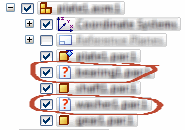
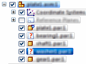

Repair Missing Files
If Solid Edge can't locate all the files of an assembly, it displays the Repair Missing Files dialog box. You can take immediate action starting with step (2) or close the dialog box and then resolve the missing files later starting at step (1).
Check the Link Management File location in the File Locations page of the Solid Edge Options dialog box.
The file open process searches for files in the priority defined in the LinkMgmt.txt , which may be defined by the system administrator. Proceed to the next step after you verify this is valid.
-
Choose Inspect tab→Evaluate group→ Repair Missing Files .
-
If you know where the missing files are located, use Search in to enter the locations.
-
To locate a folder to include in the search, click Browse.
-
Select a folder.
-
Click OK.
-
Do one of the following:
-
If the Select a Folder field displays the address, click Add to place the address in the list.
-
If the address is not correct, clear the Select a folder field, and then click Browse to look for another folder.
-
-
Add all the necessary addresses and hen arrange the list in the desired search order.
Note:Prioritizing is an important step because the Search and Replace command automatically does a recursive search and replaces the missing files with the first valid address.
-
After the list is prioritized, select the Search and Replace command to execute the search and replace the missing files.
If the search finds all the files, Solid Edge closes both dialog boxes, the Assembly PathFinder reflects the changes, and the missing file icons are no longer displayed. If the search does not find all the files, the Repair Missing Files dialog displays the remaining missing files.
-
Continue adding more folders to the list or select a file from the list to use any of the following commands:
Example:PathFinder displays icons to indicate missing files:

After you select Scroll to, PathFinder highlights the files one at a time:

-
Do one of the following:
-
If you copied a file to the appropriate missing file path or folder using Windows Explorer, click Refresh to replace the missing file automatically and update the list.
-
If you replaced a file using the Replace commands on the ribbon, click Refresh to update the list.
Note:Missing files can only be repaired in the main Assembly environment.
-
How do I
Create a one body assemblyReplace a part in an assembly
Replace a part with a part from 3Dfind.it
Scroll to a part
Learn more
Replacing parts in assembliesLook up more details
Creating a single design body from an assemblyRepair Missing Files command
Replace Part command
Replacing a part with a part from 3Dfind.it
Replacement Part dialog box